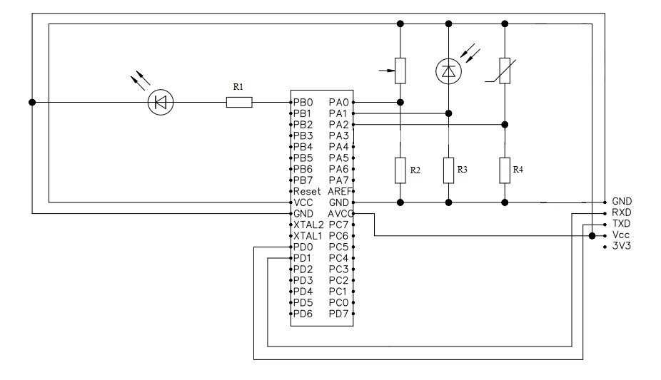

Microcontroller Atmega 16 with 4-channel ADC is connected to the following elements: a variable resistor, thermistor, and photoresistor. The board is an additional connector for ISP programming of microcontroller and LED to indicate operation. Role COM-port adapter performs USB-To-UART, which also feeds the device.
Written in Delphi a special program begins sending data bytes for COM-port. The microcontroller receives them and depending on the transmitted byte value starts to read from a channel ADC. This data is then transmitted to a computer program and building a graph. The program can choose which element to read data. In the future, instead of above mentioned items can be connected linear photodetector and build an image in a computer program.